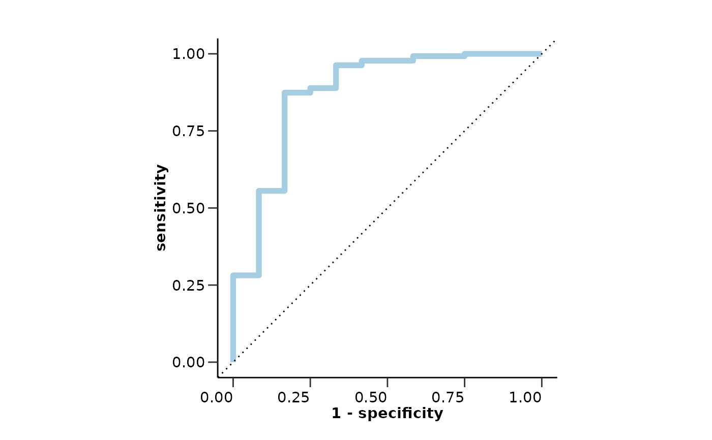
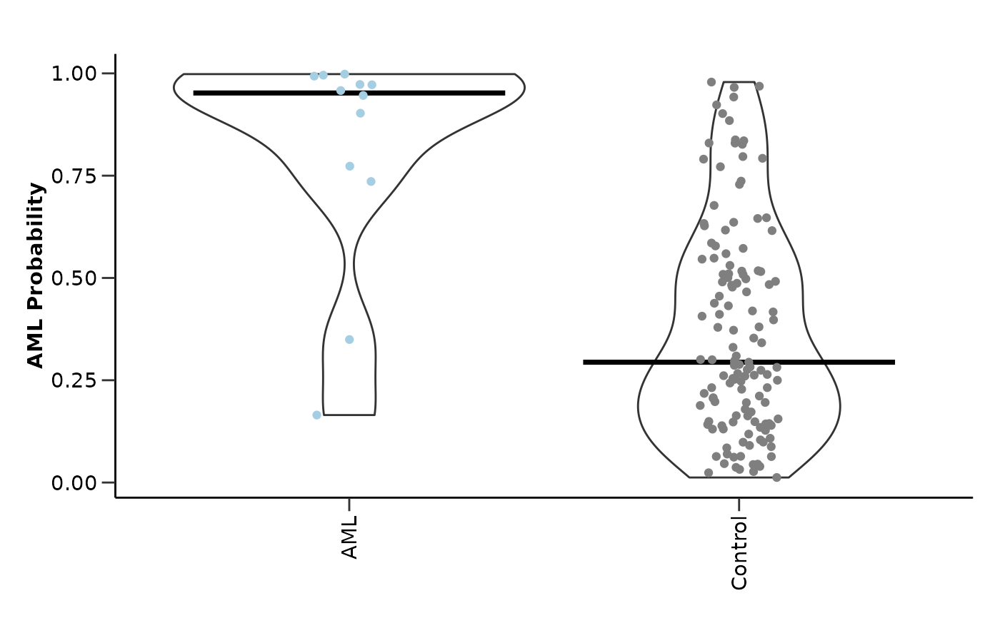

hd_model_lr() runs the logistic regression model pipeline. It creates
class-balanced case-control groups for the train set, fits the model, evaluates
the model, and plots the feature importance and model performance.
Usage
hd_model_lr(
dat,
variable = "Disease",
case,
control = NULL,
balance_groups = TRUE,
cor_threshold = 0.9,
palette = NULL,
plot_y_labels = TRUE,
verbose = TRUE,
plot_title = c("accuracy", "sensitivity", "specificity", "auc", "features",
"top-features"),
seed = 123
)Arguments
- dat
An
hd_modelobject or a list containing the train and test data.- variable
The name of the metadata variable containing the case and control groups. Default is "Disease".
- case
The case class.
- control
The control groups. If NULL, it will be set to all other unique values of the variable that are not the case. Default is NULL.
- balance_groups
Whether to balance the groups. Default is TRUE.
- cor_threshold
Threshold of absolute correlation values. This will be used to remove the minimum number of features so that all their resulting absolute correlations are less than this value.
- palette
The color palette for the classes. If it is a character, it should be one of the palettes from
hd_palettes(). Default is NULL.- plot_y_labels
Whether to show y-axis labels in the feature importance plot. Default is TRUE.
- verbose
Whether to print progress messages. Default is TRUE.
- plot_title
Vector of title elements to include in the plot. It should be a subset of
c("accuracy", "sensitivity", "specificity", "auc", "features", "top-features").- seed
Seed for reproducibility. Default is 123.
Value
A model object containing the train and test data, the metrics, the ROC curve, the selected features and their importance.
Details
This model is ideal when the number of features is small. Otherwise, use
hd_model_rreg() as it is more robust to high-dimensional data.
The numeric predictors will be normalized and the nominal predictors will
be one-hot encoded. If the data contain missing values, KNN (k=5) imputation
will be used to impute. If less than 3 features are selected, the feature
importance plot will not be generated.
Scales feature importance values to the (0, 1) range. For permutation-based importance (e.g., from Random Forest), negative values are first set to zero to reflect non-informative or noisy features. The maximum value is then scaled to 1, zero remains zero, and all other values are linearly scaled between 0 and 1 accordingly. This facilitates more interpretable comparison of feature importance in each model.
Logistic regression models are not supported for
multiclass classification, so case argument is always required. If
multi-class classification is needed, use hd_model_rreg() instead.
This function utilizes the "glm" engine. Also, as it is a classification model
no continuous variable is allowed.
Examples
# Initialize an HDAnalyzeR object with only a subset of the predictors
hd_object <- hd_initialize(
example_data |> dplyr::filter(Assay %in% c("ADA", "AARSD1", "ACAA1", "ACAN1", "ACOX1")),
example_metadata
)
# Split the data into training and test sets
hd_split <- hd_split_data(
hd_object,
metadata_cols = c("Age", "Sex"), # Include metadata columns
variable = "Disease"
)
#> Warning: Too little data to stratify.
#> • Resampling will be unstratified.
# Run the logistic regression model pipeline
hd_model_lr(hd_split,
variable = "Disease",
case = "AML",
palette = "cancers12")
#> The groups in the train set are balanced. If you do not want to balance the groups, set `balance_groups = FALSE`.
#> Tuning logistic regression model...
#> Evaluating the model...
#> Generating visualizations...
#> $train_data
#> # A tibble: 76 × 8
#> DAid Disease AARSD1 ACAA1 ACOX1 ADA Age Sex
#> <chr> <fct> <dbl> <dbl> <dbl> <dbl> <dbl> <chr>
#> 1 DA00003 1 NA NA 0.330 0.952 61 F
#> 2 DA00004 1 3.41 1.69 NA 2.69 54 M
#> 3 DA00005 1 5.01 0.128 -0.584 3.75 57 F
#> 4 DA00006 1 6.83 -1.74 -0.721 2.03 86 M
#> 5 DA00007 1 NA 3.96 2.62 3.99 85 F
#> 6 DA00008 1 2.78 -0.552 -0.304 2.83 88 F
#> 7 DA00010 1 1.83 -0.912 -0.304 -0.448 48 M
#> 8 DA00011 1 3.48 3.50 1.26 2.42 54 F
#> 9 DA00012 1 4.31 -1.44 -0.361 0.725 78 F
#> 10 DA00013 1 1.31 1.11 -1.35 1.13 81 M
#> # ℹ 66 more rows
#>
#> $test_data
#> # A tibble: 147 × 8
#> DAid Disease AARSD1 ACAA1 ACOX1 ADA Age Sex
#> <chr> <fct> <dbl> <dbl> <dbl> <dbl> <dbl> <chr>
#> 1 DA00001 1 3.39 1.71 -0.919 5.39 42 F
#> 2 DA00002 1 1.42 -0.816 -0.902 0.0114 69 M
#> 3 DA00009 1 4.39 -0.452 1.71 3.61 80 M
#> 4 DA00015 1 3.31 NA 0.687 4.11 47 M
#> 5 DA00017 1 1.46 -2.73 0.0234 1.58 44 M
#> 6 DA00018 1 2.62 0.537 0.290 1.86 75 M
#> 7 DA00028 1 2.47 -0.486 NA 3.97 78 F
#> 8 DA00032 1 3.62 -1.34 1.53 2.96 62 M
#> 9 DA00035 1 4.39 0.454 0.116 2.82 59 F
#> 10 DA00044 1 0.964 1.55 0.164 0.836 72 F
#> # ℹ 137 more rows
#>
#> $model_type
#> [1] "binary_class"
#>
#> $final_workflow
#> ══ Workflow ════════════════════════════════════════════════════════════════════
#> Preprocessor: Recipe
#> Model: logistic_reg()
#>
#> ── Preprocessor ────────────────────────────────────────────────────────────────
#> 5 Recipe Steps
#>
#> • step_dummy()
#> • step_nzv()
#> • step_normalize()
#> • step_corr()
#> • step_impute_knn()
#>
#> ── Model ───────────────────────────────────────────────────────────────────────
#> Logistic Regression Model Specification (classification)
#>
#> Computational engine: glm
#>
#>
#> $metrics
#> $metrics$accuracy
#> [1] 0.7142857
#>
#> $metrics$sensitivity
#> [1] 0.8333333
#>
#> $metrics$specificity
#> [1] 0.7037037
#>
#> $metrics$auc
#> [1] 0.8753086
#>
#> $metrics$confusion_matrix
#> Truth
#> Prediction 0 1
#> 0 95 2
#> 1 40 10
#>
#>
#> $roc_curve

#>
#> $probability_plot

#>
#> $features
#> # A tibble: 6 × 4
#> Feature Importance Sign Scaled_Importance
#> <fct> <dbl> <chr> <dbl>
#> 1 ADA 3.71 POS 1
#> 2 Sex_M 2.00 POS 0.538
#> 3 Age 1.78 NEG 0.480
#> 4 ACAA1 1.16 NEG 0.313
#> 5 ACOX1 0.563 NEG 0.152
#> 6 AARSD1 0.268 POS 0.0723
#>
#> $feat_imp_plot
 #>
#> attr(,"class")
#> [1] "hd_model"
#>
#> attr(,"class")
#> [1] "hd_model"